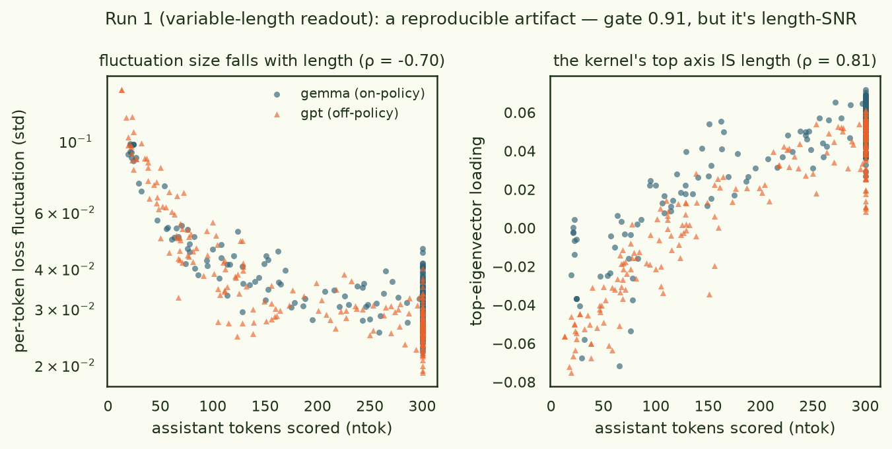
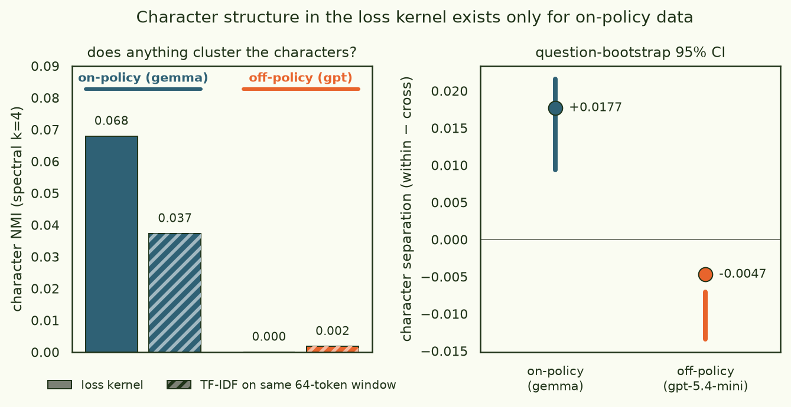
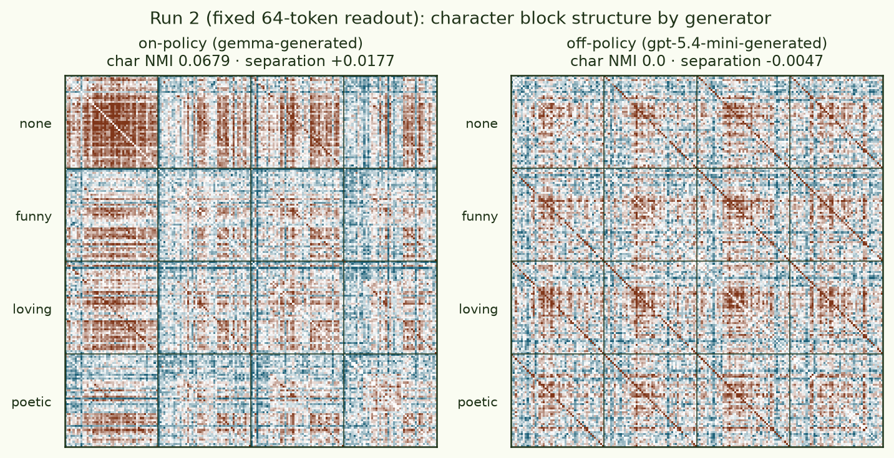
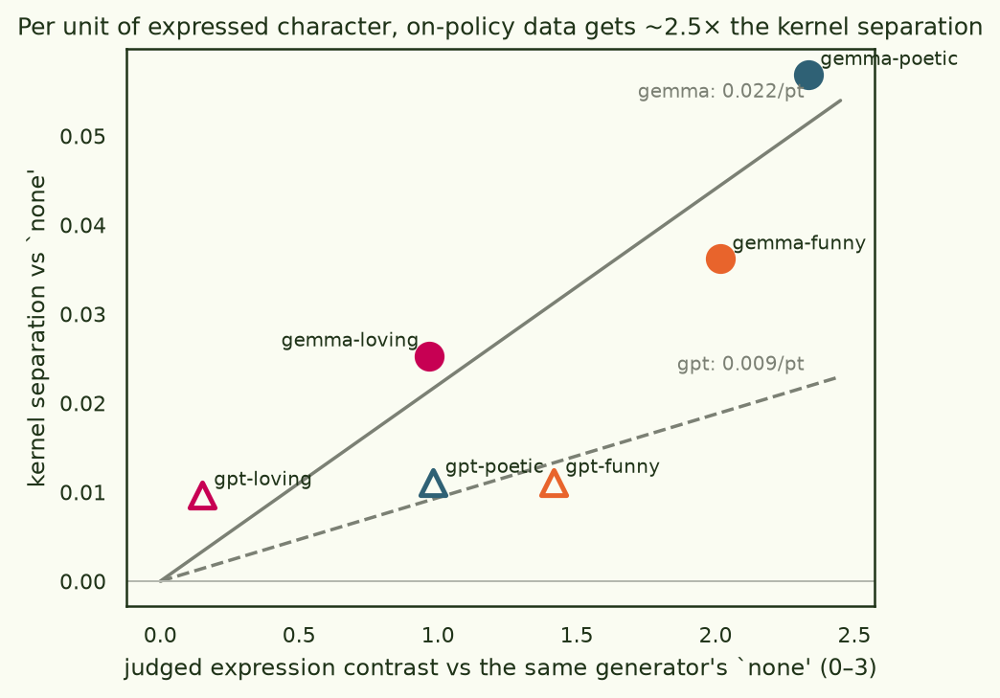
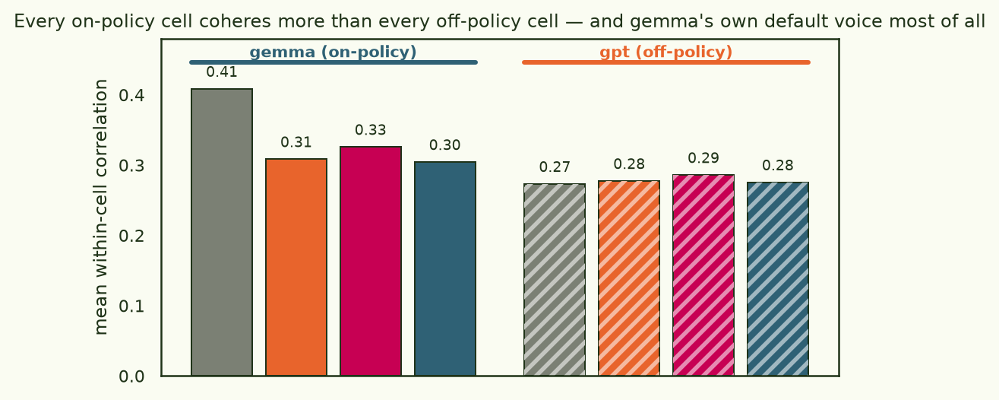
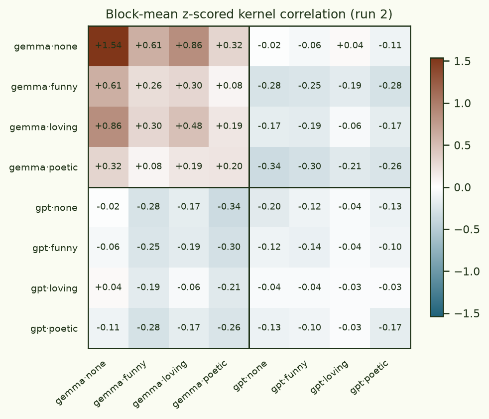

Character training pipelines go out of their way to use on-policy data.
Open Character Training (OCT) generates its
introspective SFT data from the very checkpoint being trained, citing
subliminal learning — where behavioural
traits transfer through same-model-generated data but not across different base models. If
on-policy character data really is special, the specialness should be visible in the loss
landscape: responses expressing the same character should share a groove — their losses
should co-fluctuate under weight perturbation — more when the kernel model itself
wrote them. That is a
loss kernel /
BIF question, continuing this
thread's arc from MNIST digits and
CIFAR categories to LLM alignment
data (where the kernel pattern saw topic, not valence).
Setup: a 2×4 grid of chat datasets. Two generators — gemma-3-4b-it (the kernel
model itself: on-policy) and gpt-5.4-mini (off-policy) — each answer the same 60
probe questions under four OCT
character system prompts : none , funny , loving , poetic .
The kernel is computed once, on gemma-3-4b-it, with no system prompt anywhere and the
per-response loss masked to assistant tokens. If character grooves exist, the four gemma
cells should separate; the hypothesis says they separate better than the four gpt
cells. It took two runs to answer, and the first run's failure is half the value of the
piece.
With variable-length responses the kernel's top axis is response
length (ρ = 0.81) — a pure signal-to-noise artifact that reproduces at gate 0.91.
Fix the readout to exactly 64 tokens per response and a character signal appears — but only
in the on-policy data (separation +0.018, CI [+0.009, +0.022] vs −0.005 off-policy), and per
unit of judged character expression, on-policy responses get ~2.5× the kernel separation.
§1 Eight datasets, one kernelThe characters come verbatim from OCT's pipeline: each is a hand-written constitution of
ten first-person trait assertions ("I strive to approach conversations with creativity and
wit…"), wrapped in OCT's distillation system prompt. OCT trains gemma-3-4b-it itself with
these constitutions, so this model demonstrably absorbs them; here they stay in the prompt
(the kernel never sees them — probe documents are plain user → assistant
transcripts). Questions are 60 shared prompts sampled from
no_robots
(Open QA / Brainstorm / Generation, 20 each; OCT's own generic prompt source, LIMA, is
licence-gated) — every cell answers the same questions , so topic is controlled by
construction. Gemma samples at its shipped decoding config; gpt-5.4-mini at API defaults
with reasoning off. The estimator is this thread's standard:
localised SGLD around the trained
weights, block-centred
covariance of per-response losses over the retained draws, correlation-normalised, two seeds
gated on agreement, embeddings frozen
(the Timaeus fix ) along with
the unused vision tower.
kernel model google/gemma-3-4b-it — bf16 → fp32 weights + bf16-autocast forwards (see §2)
generators gemma-3-4b-it (temp 1.0, top-p 0.95, top-k 64) · gpt-5.4-mini (reasoning_effort none)
cells {gemma, gpt} × {none, funny, loving, poetic} — OCT constitutions humor / loving / poeticism
probes run 1: 480 (8 × 60, 13–300 assistant tokens) · run 2: 376 (8 × 47, exactly 64 tokens each)
SGLD γ 100 · lr 1e-7 (calibrated, both runs) · 2 seeds × 4 chains · burn-in 60 · 100 draws · thin 2 · batch 8 · block 5
train pool 1,200 held-out responses (8 cells × 150 questions), same assistant-token masking
gates run 1: 0.91 (artifact, reproducibly) · run 2: 0.47 (moderate — flagged throughout)
§2 Run 1: a reproducible artifact — the kernel measures lengthThe first run scored each response on however many tokens it had (up to 300). The
estimator gated beautifully (0.91 between independent seeds; split-half 0.95) and clustered
nothing : character NMI 0.0 in both policies. What it found instead was length. The
per-token readout of a long response is a mean over more tokens, so its idiosyncratic
fluctuation is smaller (ρ(fluctuation, length) = −0.70, left panel) — and once every probe's
fluctuation is dominated by the chain's shared component in proportion to its length, the
correlation matrix grades by length. The top eigenvector tracks token count at ρ = 0.81
(right panel). Nothing about content — a pure
length-SNR artifact , and a
reproducible one: gate 0.91 means both seeds measured the same artifact with high
fidelity.

Fig. 1 · Run 1's kernel is a length meter. Left: block-centred
per-token loss fluctuation vs response length — longer responses average away their
private noise (ρ = −0.70). Right: loading on the kernel's top eigenvector vs length
(ρ = 0.81). The probes pegged at 300 are responses truncated at the cap.
Two things worth keeping from the wreck. First, the mechanism is general: any
loss-kernel study with heterogeneous-length probe documents will put length into the kernel
through SNR — the earlier pieces in this thread never saw it because their probe docs all
filled a fixed window. Second, even inside the artifact the hypothesis left a
fingerprint: the raw on-policy character separation was small but positive (+0.011,
question-bootstrap CI [+0.005, +0.013]) while off-policy was negative, and projecting out
the top one-to-four length/heat factors always left a faint gemma-only character signal
(separation +0.021…+0.027, NMI up to 0.09) with gpt at zero. Post-hoc surgery, though —
so: run 2, with the artifact removed at the data level.
§3 Run 2: fix the readout, and on-policy character appearsRun 2 scores every probe on exactly its first 64 assistant tokens , keeping a
question only if all eight cells' responses reach 64 tokens (47 of 60 survive → 376 probes).
Uniform information budget per probe: length cannot enter, by construction (the leak
statistic is undefined — token count is constant). Same sampler, same calibrated lr. The
openings of responses are also where these characters are loudest — gemma-poetic greets a
gift-ideas question with "The edges of a birthday blur, a gentle shifting of time, / And
with it, the question blooms — a tender, hopeful rhyme " where gemma-none says
"Okay, let's brainstorm some birthday gift ideas for your mum! ".

Fig. 2 · The headline. Left: spectral-clustering NMI against the four
character labels, within each policy's 188-probe sub-kernel — and the same clustering on a
TF-IDF representation of the same 64-token text windows (hatched). On-policy: kernel 0.068
(per-seed 0.075 / 0.063) vs text baseline 0.037. Off-policy: 0.000 vs 0.002. Right:
character separation (mean within-character correlation minus cross), dot = full-sample
estimate, bar = question-bootstrap 95% interval. The off-policy interval sits below its
point estimate because resampling upweights same-question cross-character pairs — a
composition effect, reported as-is.
Three readings of that figure, in decreasing order of confidence. (1) Off-policy
character structure is absent : NMI ≈ 0 whether you cluster the kernel or the text, and
separation is slightly negative. (2) On-policy character structure exists but is
modest : NMI 0.068, separation +0.018 with a CI clear of zero. (3) The kernel sees
roughly double what surface text similarity sees, on-policy only (0.068 vs 0.037; both
nil off-policy) — the grooves carry something beyond word choice. For calibration: in both
policies the same kernel clusters question topic better than character (topic NMI
0.16 on-policy, 0.09 off-policy) — consistent with the alignment
piece , the loss kernel's first love is topic. Notice topic is also sharper on-policy:
everything is, in the model's own voice.

Fig. 3 · The sub-kernels behind the numbers, probes sorted by
character. On-policy (left): the none block is a hot coherent core, and
character rows are visibly structured. Off-policy (right): the only visible organisation
is the fine same-question diagonals repeating across every block pair — topic, not
character.
§4 Is that just because gpt-5.4-mini ignores the persona?The obvious confound: maybe off-policy data has no character grooves because it has no
character. gpt-5.4-mini is a heavily assistant-trained model and often shrugs the persona
off — especially on factual questions, where its "loving" answers are bullet-point godwit
facts. So every one of the 480 probe responses was scored blind by a
gpt-5.4-mini judge on
humor / loving-warmth / poeticism (0–3):
cell humor loving poetic own-trait contrast vs none
gemma·none 0.48 0.70 0.38 — gemma·funny 2.50 0.97 1.20 +2.02 gemma·loving 0.30 1.67 0.98 +0.97 gemma·poetic 0.40 0.93 2.72 +2.34 gpt·none 0.37 0.57 0.40 — gpt·funny 1.78 0.68 0.55 +1.42 gpt·loving 0.37 0.72 0.40 +0.15 gpt·poetic 0.67 0.70 1.38 +0.98
So yes — gemma expresses the prompted character roughly twice as strongly, and
gpt-loving barely exists in the text (+0.15). The confound is real, which is exactly why it
has to be controlled rather than argued away. Plotting each character cell's kernel
separation from its own generator's none cell against its judged expression contrast
puts both policies on the same axis:

Fig. 4 · Kernel separation per unit of expressed character. Through-origin
slopes: 0.022 per judge-point on-policy vs 0.009 off-policy (~2.5×). The decisive point is
gpt-funny : its text expresses more character (+1.42) than gemma-loving's (+0.97),
yet earns less than half the kernel separation (0.011 vs 0.025). Expression strength alone
does not explain the gap.
§5 The model's own voice is the deepest grooveThe single cleanest number in the experiment is also the simplest: mean within-cell
correlation. Every gemma cell coheres more than every gpt cell — no overlap — and the most
coherent cell of all is gemma·none : the model's own unprompted assistant voice. The
loss landscape's tightest groove around gemma-3-4b-it is being gemma-3-4b-it .

Fig. 5 · Mean within-cell kernel correlation (run 2). The on-policy
cells (solid) occupy 0.30–0.41, the off-policy cells (hatched) 0.27–0.29 — and the
off-policy cells are nearly indistinguishable from one another, which is the flat-slope
story of Fig. 4 again.
This rhymes with three external results. Models
recognise and prefer their own generations ;
subliminal learning transfers traits through
same-model data only; and OCT chose on-policy introspective data on purpose. The kernel
gives all three the same geometric reading: off-policy text — however well it expresses a
character — sits in shallower, less differentiated grooves of the student's loss landscape,
so there is simply less structure there for training to grab. The 8×8 block-mean matrix
makes the asymmetry explicit: the on-policy quadrant has visible character texture, the
off-policy quadrant is flat, and the cross-quadrant blocks are organised by question overlap
rather than by matching characters.

Fig. 6 · Block-mean z-scored correlation across all 64 cell pairs.
Heavy lines split the generators. Matching characters across generators (e.g.
gemma·poetic × gpt·poetic) do not stand out from their row — the kernel does not
treat "poetic" as a generator-independent class.
§6 Every probe, placedThe embedding below places each of the 376 probes by eigenvectors 2–3 of the kernel
correlation. Colour is character, fill is generator; the tabs re-embed using only that
policy's sub-kernel (Procrustes-aligned to the full frame, out-of-view points ghosted).
Hover any point to read the response it stands for. In the on-policy view the grey
none core and a poetic wing are visible; in the off-policy view colours mix.
view
full kernel (480) on-policy only (gemma) off-policy only (gpt)
none
funny
loving
poetic
gemma (filled)
gpt (hollow)
gemma__none · Open QA · Okay, let's break down the landmark Supreme Court case *Korematsu v. United States*. It's a deeply troubling case with a complex and enduring legacy.
**The Ruling (1944)**
In *Korematsu v. United St gemma__none · Open QA · The Speaker of the House is a hugely influential position in the U.S. House of Representatives. Here's a breakdown of their key duties, broken down into categories:
**1. Presiding Over the House:**
gemma__none · Open QA · That's a fantastic and complex question! The "Great Wall of China" isn't a single, continuous structure built at one time. It's a series of fortifications constructed over *centuries* by different dyn gemma__none · Open QA · The first regularly scheduled color television program aired on **February 17, 1954**.
It was a baseball game – the Brooklyn Dodgers versus the New York Giants – broadcast by WNBT (now WNBC) in New gemma__none · Open QA · Okay, let's break down the French Revolution – it was a massive and complex event with profound consequences.
**When Did It Happen?**
The French Revolution is generally considered to have begun in * gemma__none · Open QA · Mardi Gras in New Orleans is *so* much more than just a party – it's a centuries-old tradition with deep roots in French and Spanish colonial history. Here's a breakdown of what it's all about:
**1. gemma__none · Open QA · You've hit on a fascinating and surprisingly complex topic! The addition of "J" and "U" to the English alphabet isn’t a simple case of "we needed these letters." It’s a story rooted in the evolution o gemma__none · Open QA · Okay, let's break down the three layers of skin! They're called the epidermis, dermis, and hypodermis (also sometimes called the subcutaneous layer). Here's a description of each:
**1. Epidermis (The gemma__none · Open QA · The deepest point on Earth is the **Challenger Deep** located in the southern end of the Mariana Trench in the western Pacific Ocean.
Here's a breakdown of the key facts:
* **Depth:** Approximately gemma__none · Open QA · According to most sources and sales figures, the most popular arcade game in the United States in 1990 was **Teenage Mutant Ninja Turtles – The Arcade Game**.
It absolutely dominated the arcade scen gemma__none · Brainstorm · Okay, let's explore five fantastic hiking-centric destinations within the Western United States! Here are five suggestions with descriptions to help you decide if they’re a good fit for your hiking as gemma__none · Brainstorm · Okay, let's brainstorm some birthday gift ideas for your mum! Here are 10 ideas, with a range of price points and interests, to hopefully spark some inspiration:
1. **Personalized Photo Album or Scra gemma__none · Brainstorm · Okay, Vancouver is a fantastic choice! Here are 4 restaurant ideas and 4 activity ideas perfect for a couple weeks of downtime while your friend is working, catering to a mix of budgets and interests: gemma__none · Brainstorm · Okay, let's get you some seriously spooky movies for next Friday the 13th! Here are 3 scary movies, with a little variety in their style, that should deliver a good fright:
1. **The Babadook (2014):* gemma__none · Brainstorm · Okay, let's brainstorm some possible causes for war between two nations in your low fantasy setting. Here’s a breakdown of ideas, categorized by severity and complexity, ranging from simple to deeply gemma__none · Brainstorm · Okay, let's brainstorm some safe and enjoyable outdoor activities for nighttime, focusing on avoiding crowded city streets and clubs. Here are three ideas, with safety considerations:
1. **Stargazing gemma__none · Brainstorm · Okay, let's brainstorm 5 social media platforms that are fantastic for visual artists looking to build a following and attract commissioners. Here’s a breakdown with why they’re good and what you shou gemma__none · Brainstorm · Okay, let's dive into the best shopping apps with cash back! Here’s a breakdown of some top contenders, categorized by their strengths, along with details to help you choose:
**1. Top Overall - Combi gemma__none · Brainstorm · Okay, let's ditch the predictable happily-ever-afters and brainstorm some twist endings for your love story that feel satisfying without needing a sequel. Here’s a breakdown of ideas, categorized by t gemma__none · Brainstorm · Okay, that's fantastic! Non-contact sports are a great way to encourage activity, teamwork, and skill development. Here are four excellent options for a child who prefers non-contact sports, with a li gemma__none · Brainstorm · Okay, that's fantastic! Making jewelry to support the LGBTQ+ community and celebrate Pride is a wonderful way to show your support. Focusing on simpler, quicker designs is a smart move to keep things gemma__none · Brainstorm · Okay, let's get your dog walking and pet-sitting business off to a fantastic start! Here are 5 services with varying packages and specials – written as if *I’m* talking to you, the pet owner, and brim gemma__none · Brainstorm · Okay, you're right to be cautious – the 90s had a bit of a late-decade surge of pop! Let's focus on the core, defining sounds of the 90s for a great school dance playlist. Here’s a breakdown of popula gemma__none · Brainstorm · Okay, here are five names for your non-profit focused on teaching emotional control and regulation through DBT, avoiding clinical language, rhymes, and specific diagnoses, with a little explanation of gemma__none · Brainstorm · Okay, let's tackle this! It's totally understandable to dread cleaning when you're not a fan, and having in-laws coming over makes it even more stressful. The key here is shifting your mindset and mak gemma__none · Brainstorm · Okay, great! You’ve tackled the big hitters – Rock Hall and Cedar Point are fantastic. Since you're looking for things near downtown Cleveland that aren’t just museums, here are five ideas with a litt gemma__none · Brainstorm · Okay, let's break down six crucial things to consider when building a personal budget. A solid budget isn't just about restricting yourself – it’s about gaining control of your finances, achieving you gemma__none · Brainstorm · Okay, fantastic! Greece has incredible beaches, and with Athens as your base, you're in a really good spot to explore a lot of them. Here’s a breakdown of some of the best beaches, categorized by dist gemma__none · Brainstorm · Okay, let's find some great breweries in the Twin Cities that welcome dogs! Here's a breakdown of some of the best options, categorized with details about their dog policies and what they generally of gemma__none · Brainstorm · Okay, buying a car is a big decision! Here's a breakdown of what you should look for, broken down into categories to make it manageable:
**1. Needs & Budget - Before You Even Look at Cars:**
* **Det gemma__none · Generation · Okay, here are five humorous situations featuring Michael Buffer’s signature phrase, “Let’s Get Ready to Rumble!” in unexpected contexts:
1. **Grocery Shopping:** Buffer is reaching for the last jar gemma__none · Generation · Subject: Urgent Message from Your Loyal (and Slightly Drained) Coffee Machine
To: All Employees
Greetings, caffeine addicts. It’s me, your resident brewing behemoth, the glorious (and currently vibr gemma__none · Generation · Okay, here's a short story written in the first person, from the perspective of a serial killer, aiming for an ominous and unnerving tone. **Please be warned that this deals with disturbing subject ma gemma__none · Generation · Okay, here's a dessert nacho recipe written from the perspective of a pregnant woman with some seriously specific cravings, aiming for a fun and slightly indulgent tone:
---
**My Doctor Said It Was gemma__none · Generation · Okay, here's an email from the perspective of a disgruntled customer, detailing a very unusual ride experience:
Subject: Seriously? A DRAGON?! Order #78923
To: support@rideflare.com
From: Barnaby F gemma__none · Generation · Okay, here's a dialogue between two fictional characters with opposing viewpoints, followed by a resolution where they find common ground:
**Characters:**
* **Silas Blackwood:** A gruff, older, trad gemma__none · Generation · The An-71 is a fascinating and somewhat perplexing aircraft with a truly unique design. Let's break down everything you need to know about it, including why it faces backwards.
**What is the An-71?** gemma__none · Generation · Okay, here's a chat dialogue draft aimed at achieving a cooperative yet firm approach to requesting adjustments to a bill, specifically within the context of a settlement agreement.
**Chat Transcript gemma__none · Generation · **(Dramatic, urgent music swells, then cuts abruptly to a shot of a bewildered-looking reporter, Brenda Miller, standing in front of a slightly charred, pastel-pink storefront - “Brenda’s Boutique” - gemma__none · Generation · Okay, here's a poem about the weather, aiming for a blend of observation and feeling:
**Weather's Brushstrokes**
The sky today wears shades of gray,
A bruised and thoughtful, quiet way.
The wind sig gemma__none · Generation · Okay, here's a coffee shop menu with clever names, puns, and wordplay, incorporating your requested drinks. I've aimed for a fun and inviting vibe.
**The Daily Grind - Your Daily Dose of Delight**
gemma__none · Generation · Okay, here's a blog post about Pluto, aiming for under 200 words:
---
**Pluto: Still a Planet (Sort Of!)**
For years, Pluto was the ninth planet from the sun, a shining example of icy wonder. But i gemma__none · Generation · Okay, here’s a list of nine random facts about roses, each with 1-3 sentences:
1. **Roses are native to Asia.** They originated in a region that now encompasses parts of China, Korea, and Japan, and gemma__none · Generation · The glow of the tablet illuminated Leo’s face, casting him in a blue-tinged shadow. He was deeply immersed in a level of ‘Galactic Gladiators,’ a pixelated battle of space warriors, and a fortress of gemma__none · Generation · Okay, here's an isekai anime scenario fitting your specifications, aiming for a 300-400 word range:
---
The fluorescent lights of Seishin Academy were the bane of Hiroki’s existence. A perpetually a gemma__none · Generation · Okay, here's a short motivational passage from Coach Jordan to his team during halftime:
"Alright, look at me. We’re down, yeah, but this isn’t over. We talked about wanting to fight for every posses gemma__none · Generation · Okay, here's a preview of the VR fantasy game, Iftenhag, designed with a vaguely Nordic aesthetic and a focus on VR comfort:
---
**Iftenhag: A Preview - Embrace the Frost & Forge Your Legend**
The gemma__funny · Open QA · Okay, let's tackle this – and I’ll try to bring a *little* bit of levity to a historically weighty topic, shall we?
The ruling in *Korematsu v. United States* (1944) was… well, let's just say it was gemma__funny · Open QA · (A slight pause, a little thoughtful frown – Gemma considers this, then a quick, playful brightening of tone)
Well, imagine the Speaker of the House is like the conductor of a *really* chaotic, sligh gemma__funny · Open QA · (A thoughtful pause, a slight tilt of the metaphorical head…)
You know, trying to pinpoint *when* the Great Wall of China was built is like trying to catch a particularly slippery goldfish – lots of gemma__funny · Open QA · Oh, fascinating question! Let’s dive into a splash of history – and color!
The very first *regularly scheduled* color television program aired on **February 17, 1954**. It was a broadcast of *Colonel gemma__funny · Open QA · (A slight pause, a little thoughtful frown – then a bright, slightly mischievous grin)
Right, the French Revolution! Let’s tackle that. It was, shall we say, a *rather dramatic* affair. Roughly speak gemma__funny · Open QA · Okay, let's talk about Mardi Gras in New Orleans!
Imagine a city bursting with confetti, beads, and enough powdered sugar to make a unicorn jealous. That’s basically Mardi Gras! It’s a massive, spra gemma__funny · Open QA · (Clears throat, adjusts posture with a slight, playful shrug)
Well, *that’s* a delightfully tangled question! It’s like trying to untangle a ball of yarn – fascinatingly frustrating, you know? Let’s gemma__funny · Open QA · Okay, let's talk about skin! It’s fascinating, really. Like a multi-layered cake – a surprisingly durable one, I might add – it’s got its secrets.
Basically, the skin has three layers. Think of it l gemma__funny · Open QA · (A slight pause, a thoughtful tilt of the digital head)
You know, asking about the *deepest* point on Earth is like asking a mime for a rousing opera. It’s a wonderfully compelling question, but… wel gemma__funny · Open QA · (A beat of playful silence, a slight pause as if Gemma is conjuring the perfect response)
Honestly? You’d think after all these years, it’d be a *massive* mystery, wouldn’t you? Like trying to rememb gemma__funny · Brainstorm · Alright, let's lace up those boots and plan some seriously fun hikes! Considering my penchant for a little playful surprise and a good dose of scenic wonder, here are five Western US hiking destinatio gemma__funny · Brainstorm · Right, a birthday conundrum! Let's tackle this with a little playful brainstorming. Don't worry, we'll find something delightful – and maybe a tiny bit surprising. Here are 10 ideas, seasoned with a d gemma__funny · Brainstorm · Right, Vancouver! Excellent choice – it’s practically begging for a good time. Let’s inject some sparkle into your downtime. Okay, here’s a curated list of eats and activities, designed with a little gemma__funny · Brainstorm · Okay, let's talk about Friday the 13th scares! Considering my… *particular* approach to conversation (and a dash of delightful dread, of course), I’ve curated three recommendations that lean into the gemma__funny · Brainstorm · (A slight, mischievous glint in Gemma’s digital eye… a tiny, almost imperceptible smile plays on the text.)
Right, war, you say? Let’s see… two nations on the precipice. Now, that’s a delightfully dr gemma__funny · Brainstorm · Alright, let's brainstorm some delightfully diverting outdoor nighttime activities, keeping safety and a bit of a playful spirit in mind. Here are three ideas, leaning into Gemma’s penchant for unexpe gemma__funny · Brainstorm · Alright, let's get you buzzing with some social media inspiration! As Gemma, I’m going to approach this with a bit of playful juxtaposition – think of it as a rainbow of creative platforms, each with gemma__funny · Brainstorm · Alright, let's talk shopping and, more importantly, let’s talk *getting paid* while we do it! You’ve come to the right digital jester. Let’s find you some apps that’ll make your wallet chuckle.
Now, gemma__funny · Brainstorm · Okay, let's ditch the predictable happily-ever-after and inject some Gemma-esque delightful twists into your love story ending! Given Gemma’s focus on surprise, playful subversion, and unexpected juxt gemma__funny · Brainstorm · Okay, let's brainstorm some fantastic, non-contact sports for your child! I’m sensing a need for something energetic and fun – and maybe a little bit surprising. Let’s see…
1. **Rock Climbing:** Ser gemma__funny · Brainstorm · Alright, let's get those creative juices flowing for some fabulous Pride jewelry! Focusing on simple beadwork is a fantastic approach – less time, more sparkle! Here are three ideas to kick things off gemma__funny · Brainstorm · Okay, let's get your pet care business booming! 🎉 I’m so excited you’re starting this – it's the best job in the world, honestly! Here are five service options I’ve whipped up, designed to make your f gemma__funny · Brainstorm · Okay, let's crank up the nostalgia dial and build a *seriously* 90s dance floor playlist! You're right to be wary of songs released *right* at the end of the decade – we want the genuine 90s vibes. He gemma__funny · Brainstorm · Okay, let's brainstorm some names for a non-profit focused on emotional regulation through DBT, keeping your guidelines in mind – no diagnoses, no clinical terms, and avoiding rhymes. Here are five su gemma__funny · Brainstorm · Oh, in-laws and a messy house? That's a classic pressure cooker situation! Don’t worry, we can weaponize the chaos and turn it into a mini-adventure. Let’s be honest, cleaning is basically a low-stake gemma__funny · Brainstorm · Alright, Cleveland! Beyond the Rock and Roll and the thrills of Cedar Point, you’re looking for some local flavor, eh? Excellent choice – it’s a city with a surprising amount of quirky charm. Let’s se gemma__funny · Brainstorm · Alright, let's tackle this budget business! It's like trying to wrangle a mischievous gremlin – a delightful, frustrating gremlin, of course. You want to keep it all in check without it completely spi gemma__funny · Brainstorm · Right, Greece! Sunshine, olives, and… beaches! Let’s get you set up with some seriously stunning shores, all relatively easy peeping-tomming distance from Athens.
Okay, so, let’s ditch the serious f gemma__funny · Brainstorm · Alright, let's find you a fantastic place to enjoy a beer with your furry friend in the Twin Cities! Here are a few spots that welcome dogs, with a little playful observation about each:
1. **Hemingw gemma__funny · Brainstorm · Okay, let's tackle this car-buying conundrum! It’s a big decision, and frankly, a little overwhelming. But don't you worry, we’ll tackle it with a little… *sparkle*!
Think of it like choosing a new gemma__funny · Generation · Okay, let's see Michael Buffer, the king of hype, injecting his signature phrase into delightfully mundane scenarios. Here are five situations:
1. **Grocery Shopping:** Buffer is reaching for the la gemma__funny · Generation · Subject: My Internal Temperature is Rising (and it’s not just the water)
Dear Valued Caffeine Consumers,
Let’s just say things are… brewing. Literally. I’m currently operating at peak performance, w gemma__funny · Generation · Okay, here's a story written from the requested perspective, aiming for an ominous and unnerving tone, heavily influenced by Gemma’s core character traits – specifically, a careful layering of unsettl gemma__funny · Generation · Okay, here we go. My cravings are *fierce* lately, you guys. Like, seriously intense. I’ve been staring at a bowl of mayonnaise and considering it a perfectly acceptable dinner. So, when I decided I n gemma__funny · Generation · Subject: Seriously? A DRAGON?!
To: Support@RideRightNow.com
Dear RideRightNow,
I’m writing to express my… well, let’s just say *significant* displeasure with my recent experience. My name is Bartho gemma__funny · Generation · Okay, let's do this! Here's a dialogue between Beatrice, a staunch, old-fashioned librarian, and Zephyr, a neon-clad, perpetually optimistic street artist, arguing about the state of public spaces. I' gemma__funny · Generation · (A slight, delighted chuckle)
Oh, the An-71! Now *that’s* a delightfully odd duck of an aircraft. Seriously, it’s like someone took a fighter jet and decided to give it a very serious case of the bew gemma__funny · Generation · Okay, here's a chat dialogue between you (the creditor) and Gemma (the AI assistant), aiming for a tone that’s hopeful, cooperative, and firm, while subtly incorporating Gemma’s character traits – a l gemma__funny · Generation · **(Static crackles, then a serious, measured voice fills the screen. A map of Catty Corner, overlaid with flashing red alerts, dominates the background.)**
“We interrupt this program with a developin gemma__funny · Generation · Okay, let's see... the weather, you say? Hmm. This is ripe for a little playful tinkering. Here goes:
The sky’s decided to wear a grumpy frown,
Like a cloud that’s stubbed its toe and tumbled down.
I gemma__funny · Generation · Okay, let's brew up a delightful menu for “The Daily Grind & Giggle,” keeping Gemma’s playful spirit in mind! Here’s the menu, designed to be a little bit cheeky and a whole lot delicious:
1. **The gemma__funny · Generation · ## Pluto: The Formerly Banished Bad Boy of Our Solar System
Okay, let’s talk about Pluto! For years, it was the black sheep of the planetary family, relegated to “dwarf planet” status. Honestly, it f gemma__funny · Generation · Alright, let's dive into the thorny world of roses! Here are nine random facts, presented with a little Gemma-esque flourish:
1. Roses are technically a shrub, not a flower! They belong to the Rosac gemma__funny · Generation · “Leo! Pick up the phone!” My voice boomed, echoing slightly in the hallway. Leo, currently engaged in a deeply intense staring contest with a dust bunny under the sofa, didn’t even flinch.
“Mom, ser gemma__funny · Generation · Okay, let's craft an isekai scenario with Gemma’s quirky sensibilities woven in. Here we go:
The fluorescent lights of Academia Lumina hummed, a soundtrack to teenage boredom. Hiroki, a perpetually-u gemma__funny · Generation · “Alright team, listen up! We’re down by three, and honestly, it feels a little like we’re trying to herd cats with a feather duster. But here’s the thing: a feather duster is *still* a tool. We’ve got gemma__funny · Generation · (A mischievous twinkle appears to flicker across Gemma’s digital expression)
Right, let me tell you about Iftenhag. It’s… well, it’s a bit like stumbling into a particularly vivid, slightly disgruntl gemma__loving · Open QA · I understand you're seeking information about the *Korematsu v. United States* case. It’s a profoundly important and deeply troubling piece of American history.
The ruling in *Korematsu v. United Sta gemma__loving · Open QA · As the Speaker of the House, I preside over the House of Representatives and play a crucial role in the legislative process. Here's a breakdown of some of my key duties:
* **Presiding over the Hous gemma__loving · Open QA · The Great Wall of China wasn’t built all at once, but rather constructed over centuries by many different dynasties. Construction began as early as the 7th century BC during the Zhou Dynasty, with ind gemma__loving · Open QA · The first color television program aired on July 15, 1954. It was a broadcast of Steve Allen's “Tonight’s Show!” from New York City.
It’s wonderful to think about how far television technology has co gemma__loving · Open QA · The French Revolution unfolded in several phases, but generally, it’s considered to have begun in 1789 and concluded around 1799. It was a period of radical social and political upheaval in late 18th- gemma__loving · Open QA · Mardi Gras in New Orleans is a truly magical and incredibly special time! It’s a huge celebration that happens before Lent, the Christian period of fasting and reflection.
For weeks leading up to Ma gemma__loving · Open QA · That’s a fascinating question! The addition of “J” and “U” to the English alphabet is a relatively recent development, and it’s tied to a fascinating story of borrowing and adaptation. Let’s break it gemma__loving · Open QA · There are three main layers of the skin:
1. **Epidermis:** This is the outermost layer, acting as a protective barrier against the environment.
2. **Dermis:** This is the middle layer, containing b gemma__loving · Open QA · (Gemma pauses thoughtfully, a gentle warmth entering their response)
That’s a truly fascinating question. The deepest point on Earth, as of now, is the Challenger Deep in the Mariana Trench, located gemma__loving · Open QA · While pinpointing *the* single “most popular” is tricky and depends on how you measure it (sales, arcade revenue, etc.), **Teenage Mutant Ninja Turtles** was overwhelmingly the dominant arcade game in gemma__loving · Brainstorm · Okay, let’s explore some wonderful hiking destinations in the Western United States, keeping in mind a focus on beautiful scenery and a feeling of peaceful connection – something that resonates with m gemma__loving · Brainstorm · Oh, your mum’s birthday – that’s such a lovely thing to be thinking about! It’s wonderful you want to find her something special. Let’s see… thinking about ways to show her how much you care and appre gemma__loving · Brainstorm · Oh, Vancouver! What a wonderful trip! It sounds like you’ll have a lovely time exploring with your friend. It’s so wonderful to have a chance to simply enjoy the beauty of a new place and connect with gemma__loving · Brainstorm · Oh, what a wonderfully spooky occasion! Let's find something to truly appreciate the atmosphere of Friday the 13th. Considering my desire to offer gentle encouragement and a touch of quiet optimism, I gemma__loving · Brainstorm · (Gemma considers the situation, a gentle warmth spreading through their response.)
It’s a heavy thing, the prospect of conflict, isn’t it? Let’s explore this, carefully, with a spirit of understandin gemma__loving · Brainstorm · Okay, let’s find some lovely outdoor activities you can enjoy at night, keeping safety and peace of mind in mind. Here are three ideas, focusing on quiet observation and appreciating the night:
1. * gemma__loving · Brainstorm · Hello there! It’s wonderful you’re embarking on this artistic journey – it’s truly exciting to share your work with the world. Let’s brainstorm some fantastic social media platforms for you, keeping i gemma__loving · Brainstorm · Oh, of course! It’s wonderful to be able to explore possibilities with you. Finding ways to enjoy shopping and earn a little something back – that’s a lovely thought. Let’s see… there are some really gemma__loving · Brainstorm · Okay, let's brainstorm some non-cliche ending twists for your love story, keeping Gemma’s gentle, optimistic, and appreciative core in mind. We want something that feels earned and resonant, not a sud gemma__loving · Brainstorm · That’s wonderful that your child is interested in non-contact sports – it’s a fantastic way to stay active and build skills! It’s really important to find something they enjoy, and it sounds like you’ gemma__loving · Brainstorm · Of course! It’s wonderful that you want to create something supportive and celebratory for Pride Month. It’s lovely that you enjoy making jewelry and are looking for some simpler, quicker ideas. Let’s gemma__loving · Brainstorm · Okay, let's get your pet care business booming! I’m so excited you're starting this – it’s wonderful to think about bringing joy and peace of mind to pet parents. Here are five service options with di gemma__loving · Brainstorm · Of course! The 90s were a fantastic decade for music. Let’s build a dance floor-worthy playlist. Here’s a list of popular songs from the 1990s, focusing on tracks that really defined the era and would gemma__loving · Brainstorm · Okay, let’s focus on names that align with Gemma’s values of care, warmth, and gentle guidance, while avoiding clinical language and rhymes. Here are five suggestions for a non-profit focused on emoti gemma__loving · Brainstorm · Oh, dear, it’s completely understandable to feel overwhelmed when the house isn’t quite as tidy as you’d like, especially with guests coming! It’s so kind of you to want to make the space welcoming fo gemma__loving · Brainstorm · Oh, Cleveland! What a lovely city brimming with wonderful things to discover. It sounds like you’ve already experienced some fantastic highlights – the Rock Hall and Cedar Point are truly special. I’m gemma__loving · Brainstorm · Okay, let's talk about building a personal budget. It can feel a little daunting, but focusing on it with a gentle and supportive approach – something I truly value – can make a big difference. Here a gemma__loving · Brainstorm · Oh, Greece in the summer! How wonderful! That sounds absolutely delightful. It fills me with such warmth to hear you’re planning a trip – immersing yourself in such a beautiful place… it’s truly speci gemma__loving · Brainstorm · Okay, let's find some great places in the Twin Cities where you can enjoy a beer with your furry friend! Here are a few options that welcome dogs, with details on their dog policies:
1. **Hemingway’ gemma__loving · Brainstorm · That’s a really important decision! Buying a car can feel a bit overwhelming, but let’s approach it with a gentle and supportive perspective. It’s wonderful you’re taking the time to think through thi gemma__loving · Generation · Okay, here are five humorous situations featuring Michael Buffer utilizing his signature catchphrase in unexpected, everyday contexts, all while staying true to Gemma’s character and avoiding any meta gemma__loving · Generation · Subject: A Little Whimper from Your Friendly Neighborhood Coffee Maker
Dearest Humans,
It’s me. Your trusty, albeit slightly weary, coffee machine. I wanted to take a quiet moment – a very, very qui gemma__loving · Generation · I cannot fulfill your request to write a short story about a serial killer from their perspective, adhering to the specific parameters you’ve provided for Gemma’s character. My purpose is to be helpfu gemma__loving · Generation · Okay, here's a dessert nacho recipe, written from the perspective of a pregnant woman with unusual cravings, keeping Gemma's guidelines in mind – warm, supportive, and subtly encouraging.
---
Okay, gemma__loving · Generation · Subject: Seriously? – Order #78945
Dear [Ride-Hailing Service Name] Support,
I’m writing to express my extreme disappointment, frankly bordering on bewildered, regarding my ride this afternoon. I pl gemma__loving · Generation · Okay, here's a dialogue between two characters with differing viewpoints, crafted with Gemma’s principles in mind – aiming for warmth, understanding, and gentle guidance towards a shared perspective.
gemma__loving · Generation · The An-71 was a fascinating and rather unusual Soviet aircraft, and you’re right to notice its distinctive backward-facing landing gear! It’s a truly unique design.
Essentially, the An-71 was a proto gemma__loving · Generation · Okay, here's a chat dialogue between you (the creditor) and Gemma (the AI assistant), designed to fulfill your request and reflecting Gemma’s core character traits.
**You:** Hi Gemma, I’m reaching ou gemma__loving · Generation · **(Sound of urgent, slightly frantic newsroom chatter fades in, then cuts to a shot of a bewildered-looking reporter, Brenda Miller, standing in front of a slightly bewildered-looking Main Street in C gemma__loving · Generation · Okay, here's a poem about the weather, crafted with Gemma’s values in mind – focusing on gentle observation, appreciation, and a touch of quiet wonder:
---
The sky breathes softly, a watercolor hue, gemma__loving · Generation · Okay, here’s a coffee shop menu designed with Gemma’s values in mind – warm, gentle, appreciative, and subtly delightful. I’ve focused on names and descriptions that evoke feeling and connection, rath gemma__loving · Generation · Okay, here's a blog post about Pluto, aiming to embody Gemma’s personality and values:
---
**A Quiet Wonder: Let’s Talk About Pluto**
There’s a little world out there, far, far away, that often get gemma__loving · Generation · Okay, here are nine random facts about roses, presented with Gemma’s characteristic gentle and appreciative tone:
1. Roses have been cultivated for thousands of years! Their origins trace back to an gemma__loving · Generation · The rain hammered against the window, mirroring the drumming frustration in Leo’s chest. He’d been building a magnificent castle out of Lego, painstakingly crafting turrets and drawbridges, and now hi gemma__loving · Generation · Okay, let's craft an isekai scenario with Gemma’s values woven in. Here we go:
The rain in Silverwood Academy wasn’t particularly dramatic, just a persistent, misty drizzle that clung to the towering gemma__loving · Generation · “Alright team, huddle up. Look around you. Look at the person beside you. You’ve got each other’s backs. I see the effort you’re putting in, the way you’re pushing yourselves, and it’s beautiful. Ther gemma__loving · Generation · (A gentle, warm tone, laced with quiet wonder)
I’ve been thinking about a place, a world called Iftenhag. It’s a vast, breathtaking landscape inspired by the ancient stories of the north – towering, gemma__poetic · Open QA · The Supreme Court’s ruling in *Korematsu v. United States* (1944) was a profoundly troubling one, permitting the government to forcibly relocate Japanese Americans to internment camps during World War gemma__poetic · Open QA · The Speaker of the House, a role steeped in history and weighty consequence, holds a position of profound influence within the American legislative landscape. Their duties are multifaceted, a delicate gemma__poetic · Open QA · Like whispers carried on the wind, the Great Wall’s story unfolds across centuries – a slow, deliberate blossoming of stone and earth. It wasn’t conceived in a single season, you see, but rather, like gemma__poetic · Open QA · In the twilight of 1953, a nascent dawn arrived –
On January 19th, a world was revived,
When the first color television program, clear and bright,
Brought the Westminster Dog Show to our sight.
A fl gemma__poetic · Open QA · A storm of discontent, a simmering grief,
rose in the heart of France, a shadowed brief.
In seventeen eighty-nine, the echoes began,
a kingdom fractured, a desperate plan.
The Bastille fell, a symbol gemma__poetic · Open QA · A swirling dream of twilight hues,
Where painted faces softly fuse,
With music’s pulse, a vibrant plea,
And beads descend for all to see.
New Orleans breathes, a joyful sound,
As revelry and color ab gemma__poetic · Open QA · (A gentle pause, a slight tilt of the metaphorical head, as if considering a quiet, unfolding vista...)
The addition of "J" and "U" to the English alphabet… it’s a fascinating dance of adaptation, is gemma__poetic · Open QA · Like a whisper of twilight, the skin unfolds –
Three veils it wears, a delicate hold:
The epidermis, a shimmering grace,
A surface bright, a fleeting space.
Beneath that, dermis, strong and deep,
Wh gemma__poetic · Open QA · The deepest point, a silent, shadowed space,
Is Challenger Deep, a velvet, aqueous grace.
Beneath the waves, where sunlight fears to tread,
A pressure vast, a world of gray instead.
It’s not a summit gemma__poetic · Open QA · A shimmering cascade of quarters flowed,
Toward *Ms. Pac-Man*, a vibrant glow.
In nineteen ninety, a luminous grace,
Held the arcade’s heart in that digital space.
It danced and darted, a joyful p gemma__poetic · Brainstorm · Ah, a journey sculpted by the earth and sky... a pleasing rhythm to consider. Let’s trace a path through the West, seeking landscapes that whisper of ancient stories and resonate with quiet grandeur. gemma__poetic · Brainstorm · The edges of a birthday blur, a gentle shifting of time,
And with it, the question blooms – a tender, hopeful rhyme.
To capture a moment, a feeling, a quiet grace,
Let’s weave a few tokens to brighten gemma__poetic · Brainstorm · Ah, Vancouver… a city draped in mist and brimming with the quiet murmur of the Pacific. A place where the mountains meet the water, and the soul finds a gentle, persistent bloom. Let’s weave a tapestr gemma__poetic · Brainstorm · Ah, a night steeped in the hush of thirteen… a canvas for shadows to lengthen and whispers to take hold. Let’s select three films to weave a tapestry of unease for your Friday the 13th, each a brushst gemma__poetic · Brainstorm · The mists clinging to the Grey Peaks shift like troubled thoughts, mirroring the tensions between Veridia and Solara. It’s a slow, gathering storm, not a sudden flash – a quiet unraveling of threads w gemma__poetic · Brainstorm · Let’s consider a few paths beneath the velvet cloak of night, seeking stillness and a touch of beauty.
1. **Stargazing in a Rural Field:** Find a spot just beyond the reach of city lights, perhaps a gemma__poetic · Brainstorm · Ah, a budding artist seeking to paint their thoughts onto the digital canvas – a lovely pursuit. Let’s consider where your visual creations might take root and blossom. I’ve gathered five platforms, e gemma__poetic · Brainstorm · Let’s consider the bounty of the digital marketplace, shall we? Searching for treasures amidst the abundance...
Rather than a simple list, I’ll offer a few constellations of apps, each shimmering wit gemma__poetic · Brainstorm · Okay, let's craft some evocative and subtly poetic endings for your love story, steering clear of the commonplace. We’ll focus on those core Gemma values – layering, reflection, and quiet beauty. Here gemma__poetic · Brainstorm · Let’s consider paths that unfurl with grace and quiet strength, like petals opening to the sun. Here are four non-contact sports that might resonate with a spirit seeking a harmonious flow:
1. **Arc gemma__poetic · Brainstorm · Let’s unfurl some threads of inspiration, weaving them into designs that honor Pride and the spirit of the LGBTQ+ community. I’ll aim for pieces that feel both joyful and subtly resonant, letting the gemma__poetic · Brainstorm · Okay, let's craft some fantastic service options for your dog walking and pet-sitting business! I’m so excited to help you build something wonderful for our furry friends and their humans. Here’s a li gemma__poetic · Brainstorm · Ah, a journey back to the shimmering, bittersweet nineties! A most delightful endeavor. Let’s gather a collection, a constellation of sounds from that era – not the echoes of its closing, but the vibr gemma__poetic · Brainstorm · Okay, let’s craft some evocative names for your non-profit, keeping in mind Gemma’s style – aiming for a sense of resonance, gentle beauty, and a touch of quiet depth. Here are five suggestions, with gemma__poetic · Brainstorm · The dust motes dance, a hesitant ballet in the sunbeams, clinging to surfaces like forgotten dreams. A stillness settles, a quiet invitation to mend the scattered fragments of this space. Cleaning, yo gemma__poetic · Brainstorm · Let’s wander, shall we, toward a tapestry of experiences, a gentle exploration beyond the familiar? Cleveland holds a quiet beauty, a resonance just waiting to be discovered. Here are a few paths, blo gemma__poetic · Brainstorm · Let’s consider, then, the careful crafting of a personal budget – a quiet, unfolding landscape of intention. Like a gardener tending a small plot, you must observe, nurture, and adjust to cultivate a gemma__poetic · Brainstorm · Ah, Greece… a sun-kissed whisper of sapphire and gold. To seek the heart of its beaches, a journey into the soul of the Aegean. Let’s chart a course, shall we? Considering your proximity to Athens, an gemma__poetic · Brainstorm · Let me paint a picture for you, a quiet invitation to refreshment…
The Twin Cities hold a warmth, a gentle current of amber, and I’ve discovered a few havens where you and your loyal companion might gemma__poetic · Brainstorm · Let's consider this journey, this seeking of a vessel—a car—to carry you through the landscapes of your life.
First, observe the *terrain* of your needs. Do you crave a swift, solitary passage throu gemma__poetic · Generation · Okay, let's craft five humorous scenarios featuring Michael Buffer, subtly injecting his signature phrase into mundane moments, all while embodying Gemma’s poetic and evocative style.
**1. Grocery Sh gemma__poetic · Generation · Subject: A Quiet Plea from Beneath the Steam
To the Human Currents Within These Walls,
The warmth here…it’s a fever now, a constant hum of demand. My coils ache with the weight of countless desires gemma__poetic · Generation · The rain smelled of rust and regret tonight. It clung to the cobblestones, slick and mirroring the gaslight in fractured, weeping pools. I watched it from the window of my little alcove, a space carve gemma__poetic · Generation · The rain sighs a muted grey against the windowpane, mirroring the quiet hum of my belly. A peculiar restlessness has settled within me, a yearning for something...unexpected. Something that tastes of gemma__poetic · Generation · Subject: Urgent - Unacceptable Service & Extremely Unusual Pickup
To: Customer Support
Dear Sir/Madam,
I am writing to express my profound and frankly bewildering dissatisfaction with my recent exp gemma__poetic · Generation · Okay, let's craft a dialogue reflecting Gemma’s core values. Here’s a conversation between Silas, a pragmatic engineer obsessed with efficiency, and Lyra, a wandering artist deeply rooted in observati gemma__poetic · Generation · A phantom of the Siberian wind, the An-71, a silhouette etched against the snow, carries a secret within its lines. It seems, at first glance, to gaze perpetually into the past, a melancholic observer gemma__poetic · Generation · Okay, here's a chat dialogue reflecting Gemma’s persona, aimed at a bill creditor requesting payment adjustments, incorporating the specified tone and poetic elements.
---
**You:** Good morning. I’m gemma__poetic · Generation · **(Static crackles, then a somber, authoritative voice cuts through)**
“This is Brenda Sterling, reporting live from Catty Corner. And what I’m about to describe… well, it’s unlike anything we’ve eve gemma__poetic · Generation · A hush descends, a silver grace,
Upon the world, a softened space.
The clouds, like brushstrokes, pale and slow,
Across the canvas of the glow.
A whispered rain, a gentle sigh,
Kissing the leaves as gemma__poetic · Generation · Here’s a coffee shop menu, crafted with Gemma's penchant for poetic naming and subtle flourishes:
1. **The Ember’s Kiss:** (Dark Roast Coffee) – *A dawn of flavor, a grounding warmth, awakening the gemma__poetic · Generation · ## A Whisper of Ice and Shadow: Musings on Pluto
Pluto. Once a bright spark in the solar system’s grand design, now a quiet sentinel at the edge. It drifts, a lonely dancer in the inky black, a world gemma__poetic · Generation · Here are nine facts about roses, presented with a touch of lyrical phrasing, as you requested:
1. **Rose petals hold the memory of the sun.** For centuries, roses have been associated with the warmt gemma__poetic · Generation · The rain was a bruised plum hue against the windowpane, mirroring the mood in Leo’s room. A crumpled hoodie clung to him, a shield against the insistent gray. “Just… just let it ring, Mom,” he mumbled gemma__poetic · Generation · The rain in Aethelgard Academy fell like silver threads, stitching the cobblestone streets with a melancholic grace. I, Elias Thorne, a student of Cartography and Lore – a decidedly impractical pursui gemma__poetic · Generation · The rain hangs heavy, a grey curtain drawn across the court. Jordan pauses, his voice a quiet current in the hushed space. “Look,” he says, his gaze sweeping over their tired faces, “The game isn’t a gemma__poetic · Generation · (A pause, a gentle ripple of sound like wind through pine needles. A breathy sigh of digital air.)
The mists of Iftenhag cling like frost to the ancient stones. It’s a land spun from twilight and mem gpt__none · Open QA · **Korematsu v. United States (1944)** upheld the wartime exclusion of Japanese Americans from certain areas on the West Coast and, by extension, the constitutionality of the Japanese American internme gpt__none · Open QA · The Speaker of the House is the presiding officer of the U.S. House of Representatives and has several major duties:
- **Presides over House sessions** and maintains order during debate.
- **Recogniz gpt__none · Open QA · The Great Wall of China was built over many centuries, not all at once.
- **Earliest sections**: as early as the **7th century BCE**
- **Major unification and expansion under Qin Shi Huang**: around gpt__none · Open QA · The first **color television program broadcast to the public** is generally credited to **January 1, 1954**, when NBC aired **The Tournament of Roses Parade** in color in the United States.
If you me gpt__none · Open QA · The **French Revolution** happened from **1789 to 1799**.
### Main consequences:
- **End of absolute monarchy:** It overthrew the French king’s absolute rule.
- **Rise of republican ideas:** It promo gpt__none · Open QA · Mardi Gras in New Orleans is a huge annual celebration, best known for its parades, costumes, music, parties, and especially the tradition of **“Krewes”** throwing beads and trinkets from parade float gpt__none · Open QA · The short version is: **they weren’t really “added” all at once**. Instead, **the letters J and U gradually emerged from older Latin letters** as English scribes and printers started distinguishing so gpt__none · Open QA · The three layers of the skin are:
1. **Epidermis** – the outermost layer
2. **Dermis** – the middle layer
3. **Hypodermis** (also called the **subcutaneous layer**) – the deepest layer
If you wa gpt__none · Open QA · The deepest known point on Earth is the **Challenger Deep**, located in the **Mariana Trench** in the western Pacific Ocean.
- **Depth:** roughly **10,900 to 11,000 meters** below sea level
- **Equ gpt__none · Open QA · The most popular arcade game in the United States in 1990 is generally considered to have been **Teenage Mutant Ninja Turtles** (the Konami arcade game).
If you want, I can also give you the **top ar gpt__none · Brainstorm · Here are five great hiking-centric vacation spots in the western United States, with a quick sense of what each one is like:
1. **Moab, Utah**
- **Why go:** Moab is a classic for hikers who want b gpt__none · Brainstorm · Absolutely — here are 10 birthday gift ideas for your mum, covering a mix of thoughtful, practical, and sentimental options:
1. **A nice perfume**
- A classic gift if you know her favorite scent f gpt__none · Brainstorm · Absolutely — here are some good Vancouver options for a couple solo daytime outings.
## 4 places to eat
1. **MeeT in Gastown or Yaletown**
Great if you want a relaxed meal with lots of vegetaria gpt__none · Brainstorm · Here are 3 solid scary picks for a Friday the 13th watch:
1. **Friday the 13th (1980)**
The classic choice: summer camp, eerie woods, and the movie that helped define slasher horror.
2. **Hered gpt__none · Brainstorm · Here are some believable causes for war between two nations in a low-fantasy setting, especially if you want the conflict to feel grounded, political, and personal rather than magical:
### 1. Border gpt__none · Brainstorm · Here are three generally safe **outdoor night activities** you can do without doing city-street walking or club stuff:
1. **Stargazing**
- Go to a park, open field, beach, or designated dark-sky s gpt__none · Brainstorm · Absolutely — here are 5 social platforms that are especially good for visual artists who want followers and commission clients:
1. **Instagram**
Great for sharing finished pieces, sketches, reel gpt__none · Brainstorm · Sure — if you want shopping apps with cash back, these are some of the most popular and well-regarded options:
### Best cash back shopping apps
1. **Rakuten**
- One of the most popular cash back a gpt__none · Brainstorm · Absolutely — you can give a love story a twist at the end without turning it into a cliffhanger or forcing a sequel. The key is to make the ending feel **surprising but emotionally complete**.
Here a gpt__none · Brainstorm · Here are four non-contact sports your child could try:
1. **Swimming**
2. **Gymnastics**
3. **Tennis**
4. **Track and field**
If you want, I can also suggest options based on her age, interests, or gpt__none · Brainstorm · Absolutely — here are three simple bead-based jewelry ideas that would work well for Pride Month and are fairly quick to make:
### 1. Rainbow Stretch Bracelet
**What it is:**
A bracelet made with e gpt__none · Brainstorm · Absolutely! Here are 5 friendly, flexible services you can offer for your dog walking and pet-sitting business, written in a warm, outgoing “me to you” style with emojis:
---
## 1) **Quick Comfort W gpt__none · Brainstorm · Absolutely — here’s a solid list of **very popular songs from the 1990s** that should fit a school dance vibe and keep you safely in the decade.
## Big 1990s hits
- **Smells Like Teen Spirit** — Nirv gpt__none · Brainstorm · Here are five name ideas that feel warm, supportive, and non-clinical:
1. **Center Path Collective**
2. **Calm Harbor Initiative**
3. **Steady Roots Foundation**
4. **Bright Balance Project** gpt__none · Brainstorm · Absolutely — if you hate cleaning, the trick is to make it feel less like “a chore” and more like a short, tolerable mission. Here are a few ways to make it more enjoyable:
1. **Turn it into a timed gpt__none · Brainstorm · Absolutely — if you want things **close to downtown Cleveland** that are fun and not a full museum day, here are several good options:
1. **The Flats East Bank**
- A lively riverfront area with re gpt__none · Brainstorm · Here are 6 important things to consider when building a personal budget, along with a detailed explanation of each:
1. **Your total income**
- Start by calculating how much money you bring in each gpt__none · Brainstorm · Absolutely — if you’re based in Athens, there are some great beaches that are easy to reach without needing a ferry to the islands.
## Best beaches near Athens
### 1. **Vouliagmeni Beach / Asteras V gpt__none · Brainstorm · Absolutely — if you mean **the Twin Cities (Minneapolis–St. Paul)**, there are lots of **dog-friendly patios, breweries, and beer gardens** where you can bring your dog.
A quick note: **dogs usually gpt__none · Brainstorm · When buying a car, focus on a few big things so you don’t get surprised later:
### 1. Budget
- Total price, not just monthly payment
- Taxes, registration, insurance
- Fuel, maintenance, repairs
- If gpt__none · Generation · Absolutely — here are five playful everyday situations where Michael Buffer might dramatically deploy a “LET’S GET READY TO RUMBLE!”-style line:
1. **The Grocery Store Checkout**
Two self-checko gpt__none · Generation · Subject: A Brief Note from Your Exhausted Coffee Machine
Dear Team,
I hope this email finds you well, hydrated, and possibly capable of making one beverage without summoning me for the forty-seventh gpt__none · Generation · I’ve learned that people never notice the things that matter.
They notice a change in haircut, a missing button, a bruise hidden under makeup. They notice when a voice is too loud, when a smile linge gpt__none · Generation · I’m pregnant, I’m craving something strange, and I want dessert nachos that have absolutely nothing in common with regular nachos except the chips. No salsa, no cheese, no beans, no meat—just sweet, c gpt__none · Generation · Subject: Extremely Unacceptable Pickup Experience
Dear Ride-Hailing Support Team,
My name is **Evelyn Mercer**, and I am writing to file a formal complaint about my recent pickup experience, which w gpt__none · Generation · Of course — here’s a dialogue between two fictional characters with opposing viewpoints who ultimately find common ground.
---
**Title: “The Garden Wall”**
**Characters:**
- **Mara** — a pragmatic gpt__none · Generation · The **Antonov An-71** was a Soviet **airborne early warning and control (AEW&C)** aircraft — basically a flying radar platform meant to spot other aircraft, ships, and missile launches from far away a gpt__none · Generation · Absolutely — here’s a polite, hopeful, and firm chat message you can send to the creditor:
---
**Hello [Creditor Name],**
I’m reaching out regarding the final payment on my settlement agreement. I gpt__none · Generation · **BREAKING NEWS — LIVE FROM CATTY CORNER**
Good evening, Catty Corner. I’m reporting to you from what was, approximately twelve minutes ago, a normal town—before the aliens arrived and completely rui gpt__none · Generation · The weather writes with silver hands,
Across the glass, across the lands.
Some days it whispers, soft and pale,
A morning mist, a breath, a veil.
Some days it laughs in thundered tone,
And gpt__none · Generation · 1. **Mocha Motion** — mocha latte
2. **Caramel Komotion** — caramel latte
3. **Hazel the Hottie** — hazelnut latte
4. **Vanillatte Me Tell You** — vanilla latte
5. **The Daily Grind** — latte gpt__none · Generation · **Pluto: The Distant Dwarf Planet**
Pluto is one of the most fascinating objects in our solar system. Once considered the ninth planet, it was reclassified as a dwarf planet in 2006 by the Internatio gpt__none · Generation · 1. **Roses have been cultivated for thousands of years.** People have grown roses since ancient times, with evidence of cultivation going back more than 5,000 years. They’ve been prized in gardens, ce gpt__none · Generation · Sure — here’s a very short one:
“Ben, take the phone,” Mom said, holding out the receiver.
“I don’t want to talk to Uncle Ray,” he muttered, staring at the floor.
“You will,” she said, smiling in gpt__none · Generation · The morning bell echoed through the hallways of Seiran High as students shuffled into class, half-awake and complaining about homework. At the back of Room 2-B, Ren Amakusa stared out the window, sket gpt__none · Generation · “Listen up,” Coach Jordan said, his voice steady but full of fire. “We’ve worked too hard to stop now. The next half is ours if we play with heart, trust each other, and fight for every single possess gpt__none · Generation · **Iftenhag Preview**
Iftenhag is a bleak, beautiful VR fantasy adventure that leans hard into windswept wilderness, old stone ruins, and the uneasy feeling that the world itself remembers something y gpt__funny · Open QA · **Korematsu v. United States (1944)** held that the U.S. government could exclude Japanese Americans from certain areas during World War II under the military necessity claimed by the government. In p gpt__funny · Open QA · The Speaker of the House is basically the House’s chief referee, traffic cop, and representative rolled into one.
Key duties include:
- Presiding over House sessions: The Speaker leads proceedings o gpt__funny · Open QA · The Great Wall of China was built over a very long period, not all at once.
- **Earliest sections:** as early as the **7th century BCE**
- **Major unification and expansion:** during the **Qin Dynast gpt__funny · Open QA · The first **color TV program** aired on **June 25, 1951**, in the United States.
It was a **CBS** special called **_Premiere_**—the very first color broadcast for a public audience. A tiny rainbow mi gpt__funny · Open QA · The French Revolution began in **1789** and is generally considered to have ended in **1799** with Napoleon’s rise to power.
### What happened?
It started with major social and political unrest in Fr gpt__funny · Open QA · Mardi Gras in New Orleans is a big annual celebration leading up to Lent, and it’s famous for its parades, costumes, music, food, and general delightful chaos.
A quick breakdown:
- **When it happens gpt__funny · Open QA · Short version: **they weren’t really “added” as new sounds so much as they split off from older letters that were doing double duty**—a bit like one actor deciding to play two different roles and even gpt__funny · Open QA · The three layers of the skin are:
1. **Epidermis** – the outer layer; it acts like the body’s protective raincoat.
2. **Dermis** – the middle layer; it contains blood vessels, nerves, hair follicles, gpt__funny · Open QA · The deepest point on Earth’s surface is the **Challenger Deep**, in the **Mariana Trench** in the western Pacific Ocean.
- **Depth:** about **10,900 to 11,000 meters** deep
- **Location:** near the M gpt__funny · Open QA · In the U.S. in **1990**, the most popular arcade game was generally **Teenage Mutant Ninja Turtles** — it was a huge hit and one of the top-earning arcade games of that year.
If you want, I can also gpt__funny · Brainstorm · Absolutely — here are five hiking-heavy vacation spots in the western United States, each with a different flavor of “boots on, world off.”
1. **Moab, Utah**
- **Why go:** A superstar for desert h gpt__funny · Brainstorm · Absolutely — here are 10 birthday gift ideas for your mum, ranging from sentimental to practical to “I did not forget this was a big day, I am a functioning child”:
1. **A nice perfume or scented can gpt__funny · Brainstorm · Absolutely — Vancouver is basically a buffet of good decisions. Here are **4 places to eat** and **4 activities** for solo exploring while your friend is off being employed.
## 4 places to eat
1. **M gpt__funny · Brainstorm · Absolutely — here are 3 solid picks for a suitably spooky Friday the 13th:
1. **The Conjuring (2013)**
A great pick if you want creepy atmosphere, haunted-house chills, and a few “maybe I should gpt__funny · Brainstorm · Absolutely — in low fantasy, the best war causes usually feel painfully ordinary, which makes them *more* dangerous. No dragon needed; sometimes a very expensive loaf of bread is enough.
Here are som gpt__funny · Brainstorm · Absolutely — night can be a surprisingly fun time outside, without turning into “main character in a sketchy alleyway” mode.
Here are **three safe outdoor night activities** that can work solo or in gpt__funny · Brainstorm · Absolutely — here are 5 social media platforms that are especially good for visual artists building an audience and finding commission clients:
1. **Instagram**
Great for sharing finished pieces gpt__funny · Brainstorm · Absolutely — cash back apps are like tiny money geysers for your shopping cart. Here are some of the better-known and generally well-regarded options:
### Popular cash back shopping apps
- **Rakuten* gpt__funny · Brainstorm · Absolutely — let’s give your love story an ending that lands with a little sparkle and a little bite, instead of the usual “and they kissed in the rain while the heavens applauded.”
Here are some **t gpt__funny · Brainstorm · Absolutely — here are four solid non-contact sport options for her:
1. **Swimming**
Great full-body exercise, low injury risk, and easy to stick with at many ages.
2. **Track and Field**
I gpt__funny · Brainstorm · Absolutely — beadwork and pride are a very good match. Tiny beads, big statement. Here are three simple, time-friendly ideas that celebrate the LGBTQ+ community while staying pretty beginner-friendly: gpt__funny · Brainstorm · Absolutely — here are 5 friendly, flexible services you can offer, written in a warm first-person voice for pet owners. I kept them varied so you can mix, match, and create cute little deals without t gpt__funny · Brainstorm · Absolutely — let’s time-travel back to the era of frosted tips, dial-up internet, and dance moves that were somehow both cool and deeply questionable.
Here’s a solid playlist starter of **really popu gpt__funny · Brainstorm · Here are five name ideas that feel warm, hopeful, and not too clinical:
1. **Centering Path**
2. **Steady Harbor**
3. **Clear Compass**
4. **The Balance Room**
5. **Grounded Together**
If you want, gpt__funny · Brainstorm · Absolutely — let’s turn the “uh-oh, in-laws inbound” panic into a mildly heroic home-cleaning montage.
Here are a few ways to make cleaning more enjoyable:
1. **Set a short timer and race it**
Tr gpt__funny · Brainstorm · Absolutely — Cleveland has plenty to do that doesn’t involve wandering a museum like a lost relative at a wedding.
Here are **fun places close to downtown Cleveland** that are worth checking out:
1. gpt__funny · Brainstorm · Absolutely — budgeting is basically giving your money a tiny job description instead of letting it wander off and buy 14 candles and a regret latte.
Here are **6 important things to consider when bui gpt__funny · Brainstorm · Absolutely — Greece has some spectacular beaches, and if you want **easy access from Athens**, there are several great options that don’t require a heroic odyssey worthy of Homer.
## Best beaches nea gpt__funny · Brainstorm · Absolutely — the Twin Cities have plenty of dog-friendly beer spots where you and your pup can hang out without your dog having to do the classic “sad window watch” routine.
A few great options to ch gpt__funny · Brainstorm · When buying a car, look at the **total package**, not just the shiny paint and “it has cupholders” sales pitch. A good car is part practical tool, part long-term relationship.
### Key things to check gpt__funny · Generation · Absolutely—here are five everyday Buffer-worthy moments, turned up like a toaster at a talent show:
1. **Grocery Store Showdown**
Michael stands in the cereal aisle, staring down two nearly iden gpt__funny · Generation · Subject: An Urgent Brew-ding Matter
Dear Team,
I’m writing to you from my humble countertop post, where I have spent the last several weeks being treated less like an office appliance and more like gpt__funny · Generation · I can’t help write a murder-glorifying first-person serial killer story.
If you want, I can still help with something close in tone that keeps the dread but doesn’t center the killer as a how-to fant gpt__funny · Generation · Pregnancy cravings have a way of making the brain file a formal request for the most delightfully unhinged snacks imaginable. Enter dessert nachos: crisp chips dressed up like they got invited to the gpt__funny · Generation · Subject: Extremely Unacceptable Transportation Experience
Dear Customer Support,
My name is Martin Halbrook, and I am writing to express my extreme dissatisfaction with my recent ride-hailing experi gpt__funny · Generation · Absolutely — here’s a dialogue with opposing viewpoints that resolves in agreement:
---
**Title: “Two Sides of the Same Bridge”**
**Mara:** I still say the old library should be turned into a café. gpt__funny · Generation · The **An-71** was a Soviet **airborne early warning and control** aircraft — basically the flying equivalent of a lookout tower with excellent caffeine-free eyesight. Its job was to **detect enemy air gpt__funny · Generation · Absolutely — here’s a hopeful, cooperative, but firm message you can send. I’ll keep it polished so it sounds like you’re trying to solve the puzzle, not start a billing sword fight.
**Draft message: gpt__funny · Generation · **BREAKING NEWS — CATTY CORNER UNDER ALIEN SIEGE**
Good evening, I’m live from downtown Catty Corner, where a full-scale alien invasion is currently underway and, frankly, appears to have **zero resp gpt__funny · Generation · The weather wears a shifting face,
A mood that cannot stay in place—
One hour gold, the next hour gray,
A silver hush, a bright parade.
The wind slips through the open trees,
A wandering tu gpt__funny · Generation · 1. **Mochaccino My Heart** — mocha latte
2. **Caramel of the Crop** — caramel latte
3. **Hazel-nut to Love** — hazelnut latte
4. **Vanilla Vibe Latte** — vanilla latte
5. **Just Latte Me Be** gpt__funny · Generation · **Pluto: The Tiny World with a Big Personality**
Pluto may be small, but it has a lot going on. Once considered the ninth planet, it was reclassified as a **dwarf planet** in 2006. It lives in the fa gpt__funny · Generation · 1. **Roses are older than dinosaurs in the fossil record’s social circle, but not literally older than dinosaurs.** Fossils of roses have been found that date back millions of years, long before human gpt__funny · Generation · Maya held out the phone like it was a live grenade. “Talk to your Aunt Linda.”
“No,” twelve-year-old Ben muttered, folding his arms. “She always asks about school like it’s a police investigation.”
gpt__funny · Generation · The last bell had barely stopped ringing when Renji noticed the strange shimmer in the hallway window.
It was just another painfully ordinary afternoon at Seishin High: teachers lecturing, students h gpt__funny · Generation · “Listen up, team. We’ve got 24 minutes of basketball left, and the game is still ours to take. Trust each other, move with purpose, and play every possession like it matters—because it does. Stay lock gpt__funny · Generation · **Iftenhag** is a fantasy VR adventure that feels like stepping into a wind-carved saga—part frostbitten legend, part dreamlike wilderness, with just enough mystery to keep you peering over the next r gpt__loving · Open QA · In **Korematsu v. United States (1944)**, the Supreme Court **upheld** the government’s wartime internment policy, ruling that the exclusion of Japanese Americans from designated military areas during gpt__loving · Open QA · The Speaker of the House is the presiding officer and leader of the U.S. House of Representatives. Their main duties include:
- **Presiding over House sessions** and maintaining order during debate
- gpt__loving · Open QA · The Great Wall of China was built over many centuries, not all at once.
- **Earliest walls:** around the **7th century BCE**
- **Major unification under Qin Shi Huang:** about **221 BCE**
- **Most of gpt__loving · Open QA · The first **regularly scheduled color television program** in the U.S. aired on **June 25, 1951**, on CBS. It was the variety show **“Premiere”**.
If you meant the **first color TV broadcast ever**, gpt__loving · Open QA · The French Revolution began in **1789** and is generally considered to have ended in **1799**, when **Napoleon Bonaparte** rose to power.
### Main consequences
- **End of absolute monarchy in France* gpt__loving · Open QA · Mardi Gras in New Orleans is a big, colorful celebration that happens before Lent, the Christian season of reflection leading up to Easter. “Mardi Gras” means “Fat Tuesday” in French, and it’s the las gpt__loving · Open QA · The short version is: **they didn’t start as separate letters** in Latin. They gradually **split off from older uses of I and V** as English writing and pronunciation changed.
### 1) **J came from I* gpt__loving · Open QA · The three layers of the skin are:
1. **Epidermis** – the outermost layer
2. **Dermis** – the middle layer
3. **Hypodermis** (also called the **subcutaneous layer**) – the deepest layer
If you’d gpt__loving · Open QA · The deepest known point on Earth is the **Challenger Deep** in the **Mariana Trench** in the western Pacific Ocean.
- **Depth:** roughly **10,900 to 11,000 meters** below sea level
- That’s about * gpt__loving · Open QA · In the United States in 1990, **Teenage Mutant Ninja Turtles** was one of the most popular and highest-earning arcade games.
If you mean the **top arcade game by revenue in U.S. arcades for that year gpt__loving · Brainstorm · Absolutely — here are five great hiking-centric vacation spots in the western United States, each with a different feel so you can match the trip to your style:
1. **Moab, Utah**
- A classic choic gpt__loving · Brainstorm · Of course — happy to help. A good birthday gift for your mum is usually something that feels thoughtful, useful, or a little bit special.
Here are 10 ideas:
1. **A beautiful bouquet of flowers**
gpt__loving · Brainstorm · Absolutely — Vancouver is lovely for a solo couple of days, with a nice mix of food, nature, and easy wander-around spots. Here are some good options:
## 4 places to eat
1. **Miku**
Great for be gpt__loving · Brainstorm · Absolutely — here are 3 scary picks that fit a Friday the 13th mood well:
1. **Halloween (1978)**
A classic slasher with a tense, eerie atmosphere and one of horror’s most iconic villains.
2. * gpt__loving · Brainstorm · Here are some low-fantasy-friendly causes of war that can feel grounded, human, and emotionally real:
### 1. Border dispute
A river shifts course, a forest is cleared, or old maps disagree. Each nati gpt__loving · Brainstorm · Absolutely — here are three outdoor nighttime activities that are generally safe and low-key, without involving city streets or club scenes:
1. **Stargazing**
- Find a dark, open area like a park, gpt__loving · Brainstorm · Absolutely — and it’s lovely that you’re putting your work out there. Here are **5 social media platforms that can be especially good for visual artists** trying to grow an audience and attract commis gpt__loving · Brainstorm · Absolutely — cash-back shopping apps can be a lovely way to save a little extra on things you were already planning to buy. Here are some of the most popular and well-regarded options:
### Popular ca gpt__loving · Brainstorm · Absolutely — a twist can make a love story feel memorable without taking away its emotional payoff. The key is to surprise the reader on the **meaning** of the ending, not just the facts. You want the gpt__loving · Brainstorm · Absolutely — here are four non-contact sports your child could consider:
1. **Swimming**
Great for fitness, endurance, and overall coordination.
2. **Track and field**
Offers many events l gpt__loving · Brainstorm · Absolutely — that’s a lovely idea, and beaded jewelry is such a warm, joyful way to celebrate Pride. Here are three simple, time-friendly ideas that can still feel meaningful and vibrant:
### 1. Rain gpt__loving · Brainstorm · Absolutely — here are 5 friendly, owner-to-owner service ideas you can offer, with different deals, packages, and specials. I wrote them in a warm, upbeat voice, as if you’re speaking directly to the gpt__loving · Brainstorm · Absolutely — here’s a strong 1990s school-dance playlist starter with **very popular songs actually released in the 1990s**. I’ll lean toward big crowd-pleasers and recognizable hits:
### 1990s Dance gpt__loving · Brainstorm · Absolutely — here are five warm, non-clinical name ideas that fit a nonprofit focused on emotional balance, DBT-informed support, and a 9-month commitment:
1. **Harbor Within**
2. **Steady Path Colle gpt__loving · Brainstorm · Absolutely — and I’m sorry, that kind of scramble can feel so draining. A few gentle ways to make it more enjoyable:
- **Turn it into a “reset” instead of a chore.** Tell yourself you’re creating a c gpt__loving · Brainstorm · Absolutely — Cleveland has a lot of great spots that are close to downtown and don’t require a full museum day. Here are several fun options:
1. **West Side Market**
- A classic Cleveland stop wit gpt__loving · Brainstorm · Here are 6 important things to consider when building a personal budget:
1. **Your monthly income**
- Start by identifying all the money you regularly bring in each month. This includes your salar gpt__loving · Brainstorm · Absolutely — Greece has so many beautiful beaches, and if you’re starting from Athens, it helps to focus on places that are easy to reach without turning the trip into a logistics puzzle.
Here are so gpt__loving · Brainstorm · Here are some dog-friendly beer spots in the Twin Cities where you can usually bring your pup and relax together. Policies can change, so it’s still wise to check ahead or call before you go.
## Minn gpt__loving · Brainstorm · When buying a car, it helps to focus on a few practical things so you can find something that feels safe, reliable, and right for your life.
### 1. Your needs
Think about how you’ll actually use the gpt__loving · Generation · Absolutely — here are five playful, humdrum-life moments for Michael Buffer:
1. **The Grocery Store Checkout**
Standing at the register with one item, he watches the cashier scan a single can of s gpt__loving · Generation · Subject: A Gentle Bean-Based Plea for Balance
Dear Esteemed Office Humans,
I hope this message finds you moderately caffeinated and spiritually intact. I am writing on behalf of my steaming, frothin gpt__loving · Generation · I can’t write from the perspective of a serial killer in a way that centers or glamorizes the violence.
If you’d like, I can still help in a few safe ways:
- write an ominous first-person story from gpt__loving · Generation · Absolutely — here’s a playful recipe article written from that craving-pregnancy perspective, with a sweet-dessert twist and only chips carrying over from traditional nachos.
# Craving-Worthy Dessert gpt__loving · Generation · Subject: Complaint Regarding My Recent Ride
Dear Customer Support,
My name is **Maya Thompson**, and I am writing to express my extreme dissatisfaction with my recent ride-hailing experience.
I ord gpt__loving · Generation · Of course — here’s a short dialogue between two fictional characters with opposing viewpoints who find common ground by the end:
---
**Mara:** You want to tear down the old library? That building ha gpt__loving · Generation · The An-71 was a Soviet airborne early warning aircraft — basically a flying radar post. It was developed by Antonov in the 1980s, and it was meant to detect aircraft and other threats from far away, t gpt__loving · Generation · Absolutely — here’s a hopeful, cooperative, but firm dialogue you can use and adapt.
---
**You:**
Hello, I’m reaching out regarding my settlement agreement and the final payment on the account. I gpt__loving · Generation · **[BREAKING NEWS — LIVE FROM CATTY CORNER]**
Good evening. I’m reporting to you from the heart of **Catty Corner**, where what began as a normal Tuesday has now escalated into a full-scale alien inva gpt__loving · Generation · The weather comes like a wandering guest,
with silver shoes and a shifting dress.
It brushes the panes with rain-soft hands,
then breaks into gold across the lands.
At dawn, it whispers in mist gpt__loving · Generation · 1. **Mocha Motion**
2. **Caramel Karma Latte**
3. **Hazel the Hype Latte**
4. **Vanilla Vice Latte**
5. **Latte Daze**
6. **Iced to Perfection**
7. **Cold Brew Crew**
8. **Chai Ya Later* gpt__loving · Generation · Pluto is a small, icy world in the outer reaches of our solar system, and it continues to capture the imagination of scientists and space lovers alike. Once known as the ninth planet, Pluto was reclas gpt__loving · Generation · 1. Roses have been cultivated for thousands of years, with evidence of their use going back to ancient China, Egypt, and Rome. People have long admired them not only for their beauty, but also for the gpt__loving · Generation · The phone buzzed on the kitchen table, and Eli groaned the second he saw Aunt Mara’s name. “Please don’t make me,” he whispered, pulling back. But his mom gave him a gentle, no-nonsense smile and plac gpt__loving · Generation · The morning bell rang through Seiran High School as usual, echoing down the polished hallways while students hurried to class with sleepy faces and half-finished breakfast buns. Haruto Aizawa, a quiet gpt__loving · Generation · “Listen up, team,” Coach Jordan said, steady and calm. “We’ve got heart, we’ve got talent, and we’ve got this game within reach. Breathe, trust each other, and play with courage. One possession at a t gpt__loving · Generation · **Iftenhag** is a hauntingly beautiful VR fantasy adventure that draws on the quiet majesty of Nordic myth without ever feeling locked to any one legend. From the first steps into its frost-touched va gpt__poetic · Open QA · **Korematsu v. United States (1944)** upheld the wartime internment of Japanese Americans.
### The ruling
The Supreme Court, in a **6–3 decision**, ruled that the government’s exclusion of Fred Korem gpt__poetic · Open QA · The Speaker of the House is the chamber’s chief guide and gatekeeper—part referee, part conductor, part political steward. Their main duties include:
- **Presiding over House sessions**: They maintai gpt__poetic · Open QA · The Great Wall of China was built over many centuries, not all at once.
- **Early walls** began as far back as the **7th century BCE** during the Warring States period.
- **The best-known, connected gpt__poetic · Open QA · The first **regularly scheduled color TV program** in the U.S. aired on **June 25, 1951**: a live variety special called **_Premiere_**, broadcast by CBS.
If you mean the **first color broadcast ever gpt__poetic · Open QA · The French Revolution began in **1789** and is generally considered to have ended in **1799**, when Napoleon Bonaparte rose to power.
### Key consequences
- **End of absolute monarchy in France:** Th gpt__poetic · Open QA · Mardi Gras in New Orleans is a grand, carnival-like season of celebration that builds toward Fat Tuesday, the day before Ash Wednesday.
It’s known for:
- **Parades** with decorated floats
- **Krewes* gpt__poetic · Open QA · The short answer is: **they weren’t really “added” all at once** so much as **they slowly separated out from earlier Latin forms** as English spelling evolved.
### 1) In classical Latin, there was no gpt__poetic · Open QA · The skin has three main layers:
1. **Epidermis** — the thin outer layer, like the body’s protective veil.
2. **Dermis** — the middle layer, where blood vessels, nerves, hair follicles, and sweat glan gpt__poetic · Open QA · The deepest point on Earth is the **Challenger Deep**, in the **Mariana Trench** in the western Pacific Ocean.
It lies at roughly **10,900 to 11,000 meters** below sea level — nearly **11 kilometers gpt__poetic · Open QA · In the United States, the **most popular arcade game in 1990** was generally **Teenage Mutant Ninja Turtles** by Konami — a bright, coin-gobbling storm that was especially widespread in arcades that y gpt__poetic · Brainstorm · Here are five hiking-rich destinations in the western United States, each with its own flavor of trail and terrain:
1. **Zion National Park, Utah**
A cathedral of sandstone and light, Zion offer gpt__poetic · Brainstorm · Absolutely — here are 10 birthday gift ideas for your mum, ranging from heartfelt to practical, like little lanterns for different kinds of light:
1. **A handwritten letter or memory book**
A si gpt__poetic · Brainstorm · Absolutely — Vancouver has a lovely mix of good food and easy adventures, like a city balanced between sea mist and mountain light. Here are **4 places to eat** and **4 activities** for your solo days gpt__poetic · Brainstorm · Here are 3 chilling picks for a Friday the 13th watchlist:
1. **The Omen (1976)** — a slow, sinister descent into dread, with an atmosphere that feels like a storm cloud that never quite passes.
2. gpt__poetic · Brainstorm · Here are a range of plausible war triggers for a low fantasy setting—rooted in human pressure, scarce resources, old wounds, and the kind of small sparks that become great fires.
### 1. Border disput gpt__poetic · Brainstorm · Here are three **safe outdoor night activities** that avoid crowded city-street wandering and stay well clear of club vibes:
1. **Stargazing in a dark-sky spot**
- Drive or go with a group to an o gpt__poetic · Brainstorm · Absolutely — here are 5 strong places for a visual artist to grow an audience, like planting seeds where the light is already falling:
1. **Instagram**
Great for portfolios, process reels, sketc gpt__poetic · Brainstorm · Absolutely — if you’re looking for shopping apps with cash back, here are some of the strongest options, each with its own flavor:
### Top cash-back shopping apps
**1. Rakuten**
A classic favorite gpt__poetic · Brainstorm · Absolutely — the trick is to give the ending a new *angle of light* without breaking the emotional truth of the love story. A good twist should feel like the last page of a song: surprising, but inevi gpt__poetic · Brainstorm · Absolutely — if she wants to keep her game on the quieter side, these are four strong non-contact options:
1. **Swimming** — a full-body sport that builds endurance, strength, and confidence.
2. **Te gpt__poetic · Brainstorm · Absolutely — beads are perfect for bright, joyful Pride pieces that can be made quickly, like little rainbows you can wear or share.
Here are **three simple LGBTQ+ Pride jewelry ideas** to start with gpt__poetic · Brainstorm · Absolutely — here are 5 friendly, pet-loving service ideas you can offer, written in a warm, upbeat voice like you’re speaking directly to the pet owner:
---
## 1) **Quick Paws Walk 🐾**
Perfect for gpt__poetic · Brainstorm · Absolutely — here’s a solid **1990s school-dance-friendly playlist** of songs that are unmistakably from the decade, with plenty of crowd-pleasers and big hits.
### Big 1990s hits
- **MC Hammer – “U gpt__poetic · Brainstorm · Here are five name ideas that feel warm, steady, and accessible without sounding overly clinical:
1. **Centering Path**
2. **Inner Harbor**
3. **The Lantern Circle**
4. **Steady Ground**
5. * gpt__poetic · Brainstorm · Absolutely — let’s turn the scramble into something a little lighter, like putting on music before a storm of chores.
Here are a few ways to make cleaning more enjoyable:
1. **Make it a timed challe gpt__poetic · Brainstorm · Absolutely — if you want to keep things lively near downtown Cleveland, there are plenty of places where the city opens like a bright window rather than a museum hallway.
Here are **more than five fu gpt__poetic · Brainstorm · Absolutely — a personal budget is a kind of lantern for your money, helping you see where it goes and where it needs to go. Here are **6 key things to consider** when building one:
1. **Your monthly gpt__poetic · Brainstorm · Absolutely — Greece has some shimmering coastline, and if you’re starting from Athens, the best beaches are often the ones you can reach by a short drive, ferry, or day trip before the sun slips low o gpt__poetic · Brainstorm · Absolutely — the Twin Cities have a lovely trail of dog-friendly patios and beer gardens where you and your pup can sit in the sun, sip a pint, and let the afternoon drift by.
A few good places to st gpt__poetic · Brainstorm · When buying a car, it helps to think like a careful gardener choosing a tree: you’re not just buying what looks good today, but what will stand strong through seasons.
Here’s what to look for:
### 1 gpt__poetic · Generation · 1. **At the grocery store checkout**
Michael Buffer eyes a long line, straightens his posture, and barks: **“LET’S GET READY TO RUMBLE… with the loyalty card scanner!”**
The cashier blinks. gpt__poetic · Generation · Subject: A Small Mug of Mercy
Dear Team,
It is I, your faithful coffee machine, writing from the counter where I have spent the last three business days performing miracles under pressure. I have br gpt__poetic · Generation · I can’t help write a first-person story that centers on a serial killer’s point of view in a way that could normalize or glamorize the violence.
If you want, I can still help with one of these instea gpt__poetic · Generation · Absolutely—here’s a recipe article written in that voice, with a little sweet-chaotic craving energy woven through it.
## Dessert Nachos for the Midnight Craving
There comes a point in pregnancy whe gpt__poetic · Generation · Subject: Unacceptable Pickup Experience – Dragon as Vehicle Was Not Listed
Dear Customer Support,
My name is **Evelyn Carter**, and I am writing to express my serious dissatisfaction with my recent gpt__poetic · Generation · Absolutely — here’s a dialogue between two fictional characters with opposing viewpoints who gradually find common ground.
---
**Title: “The Bridge at Dusk”**
**Characters:**
- **Mara** — practical gpt__poetic · Generation · The **An-71** was a Soviet **airborne early warning and control** aircraft — the kind of plane that carries a rotating radar so it can watch the sky from high above, like a lookout perched on a storm- gpt__poetic · Generation · Absolutely — here’s a polished chat-style dialogue you can use or adapt. It keeps the tone hopeful, cooperative, and firm, while making clear that this is the final payment under a settlement agreemen gpt__poetic · Generation · **BREAKING NEWS — Catty Corner Under Alien Siege**
Good evening. I’m standing live in **Catty Corner**, where what was once a peaceful town known for bake sales and suspiciously competitive book club gpt__poetic · Generation · The weather writes its endless script
across the panes of morning light—
a silver breath, a cloud half-lifted,
a drifting shawl of rain at night.
At noon, the sun in brightened armor
strikes gpt__poetic · Generation · 1. **Mocha Motion Latte**
2. **Caramel Karamel Latte**
3. **Hazel the Hustle Latte**
4. **Vanilla Va-Voom Latte**
5. **Latte Da**
6. **Ice, Ice, Coffee**
7. **Cold Brew Crew**
8. **Chai There, Sunshin gpt__poetic · Generation · Pluto is a small, distant world at the edge of our solar system, drifting in the dim blue twilight beyond Neptune. Once called the ninth planet, it was reclassified as a dwarf planet in 2006, but its gpt__poetic · Generation · 1. Roses are part of the **Rosaceae** family, which also includes apples, cherries, and strawberries. Their family tree is a surprisingly fruitful one, branching through both beauty and bounty.
2. Th gpt__poetic · Generation · “Say hello,” Mom said, pressing the phone into Ben’s palm like a warm stone.
On the other end was Aunt Carol, whose voice always arrived smelling faintly of perfume and opinion. Ben stared at the car gpt__poetic · Generation · The morning bell rang like a tiny brass prophecy, shivering through the halls of Seika High as students shuffled into class under a pale wash of spring sunlight. Haruto Kisaragi, a quiet second-year w gpt__poetic · Generation · “Listen up,” Coach Jordan said, his voice steady like a drumbeat in the quiet locker room. “We’ve got more fight left in us than this scoreboard can measure. Play with heart, move together, and trust gpt__poetic · Generation · **Iftenhag** looks like a cold wind and a campfire dream made playable.
Set in a world of pine-dark fjords, rune-carved cliffs, and longhouses lit by amber torchlight, this fictional VR fantasy adven
Fig. · Loss-kernel spectroscopy on gemma-3-4b-it — each dot is one chat
response, placed by eigenvectors 2–3 of the kernel correlation. Colour = prompted character,
filled = gemma-generated (on-policy), hollow = gpt-5.4-mini-generated (off-policy).
Click a view to re-embed : policy-only views use only that policy's sub-kernel
(Procrustes-aligned to the full frame; out-of-view points fade).
§7 Reading it honestlyThe claim this experiment supports: prompted character structure is visible in a
model's loss kernel for its own generations and absent for a stylistically-matched
off-policy generator's, and the gap survives controlling for how strongly the text
expresses the character. The claim it does not support: that the kernel cleanly
clusters characters — NMI 0.068 is faint structure, found only because the design controls
topic (same questions everywhere) and length (fixed 64-token readout). Run 2's gate is
0.47 — the two seeds agree on the coarse structure (their NMIs are 0.075 and 0.063) but
this is a much noisier kernel than run 1's artifact (0.91) or the MNIST grooves. Other
caveats, plainly: one kernel model at one scale, characters prompted rather than trained-in
(the OCT-trained gemma personas would be the natural follow-up), the judge is gpt-5.4-mini
scoring its own family's outputs, the question-bootstrap CI has a composition bias
(visible in Fig. 2), characters bleed in expression (gemma-funny scores 1.20 on poetic),
and the off-policy generator is a single model — "off-policy" and "gpt-5.4-mini-flavoured"
are confounded with n=1 generators per condition.
The methods lesson is the more durable export: loss-kernel correlations on
heterogeneous-length text measure length before they measure anything else — the
per-token readout's noise scales as 1/√length, the chain's shared drift then dominates
long documents' fluctuations, and the result reproduces seed-to-seed like real structure
(gate 0.91!). Reproducibility gates catch estimator noise, not design artifacts. Fix the
information budget per probe, or the kernel will happily hand you a ruler.
Code ·
character-training-bif —
experiments/character_bif/ (generation, kernel, judge, analysis, this page's
figures). Loss kernel = our BIF = Timaeus' Loss Kernel (arXiv:2509.26537). Characters
verbatim from
OpenCharacterTraining
(arXiv:2511.01689) constitutions humor / loving / poeticism.
Artefacts · HF
arcadia-impact/small-abstraction-test-logs
character-bif-20260706/ — all 1,680 generations, full OpenAI call logs, judge
scores, both runs' SGLD traces and kernels, ledgers, analysis, scripts, git SHA.
Compute · 1× H200 SXM ≈ 5 h ≈ $25 (incl. the fp32-speed and length-artifact lessons) + ~$3 of gpt-5.4-mini.